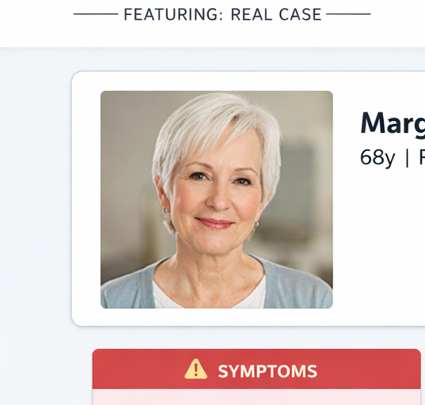

Overcoming Overactive Bladder (OAB)
Elevate the standard of care. Move beyond poorly tolerated anticholinergics and master the paradigm shift toward highly selective beta-3 adrenergic agonists.
Start Simulation play_arrowPhase 01: Margaret's Case
Follow Margaret, a 68-year-old female struggling with severe urgency. Your diagnostic and prescribing choices will determine her ability to remain independent.

Margaret R.
68y | Retired Teacher
Comorbidity
Mild Cognitive Impairment
Meds
Metoprolol (hypertension, HTN)
// CLINICAL NOTE
"Patient admits to 3-4 leakage episodes a week. She maps out bathrooms everywhere she goes and restricts her water intake severely before leaving the house."
Diagnostic Pathway
Margaret is embarrassed but admits her symptoms are ruling her life. What is your most appropriate first diagnostic step?
Interactive Lab 02
Bladder Pathophysiology
Interact with the slider to fill the bladder. Notice how overactive bladder (OAB) triggers uninhibited detrusor spasms and severe urgency at much lower volumes.
Patient Sensation
Empty. Comfortable.
Population Health
The Cost of Non-Adherence
Older generic anticholinergics cause severe dry mouth and constipation, leading to ~70% discontinuation by month 12. Adjust the Treatment Adherence slider to see how improving tolerability prevents costly downstream cascades like falls, UTIs, and diaper usage.
Annual Downstream Cost Impact
Pads / Diapers
$1,260
Emergency Room (ER) / Falls / Urinary Tract Infection (UTI)
$1,890
Total Avoidable Downstream Cost
$3,150
Global Mastery Assessment
Complete all 4 questions to claim your continuing education (CE) credits.